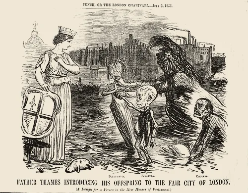

· Edición 72 · 4 min de lectura
En Colombia, casi la mitad del agua sucia urbana no se trata

En Colombia, casi la mitad del agua sucia urbana no se trata
Ver todo el tema, de principio a fin →
En pocas palabras. A dónde va el agua cuando uno lava los platos? En las ciudades de Colombia, casi la mitad vuelve a los ríos sin pasar por una planta que la limpie, y río abajo con ella se riegan hortalizas. Chile lo resolvió en 14 años; Bogotá acaba de abrir la licitación de la planta que limpiaría la mayor parte de la suya.
El dato curioso. En el verano de 1858, el río Támesis olía tan mal que en el Parlamento británico empaparon las cortinas en cal clorada, según el London Museum: fue el Gran Hedor. Londres llevaba años sin dinero para sus alcantarillas; la nariz de los legisladores lo consiguió. El 2 de agosto se aprobó la ley que pagó la red del ingeniero Joseph Bazalgette, que sacó las aguas negras del centro. La caricatura de arriba es de ese verano.
¿Qué pasa? En 2008, en una finca de la vereda Canoas, en Soacha, unos investigadores analizaron lechugas, apio, repollo y brócoli regados con agua del río Bogotá. En las cuatro, el plomo pasó el límite que la Unión Europea fija para la comida de bebés.
También en Soacha quedará la planta Canoas, cuya licitación abrió el Acueducto de Bogotá el 27 de octubre: limpiaría 70 de cada 100 litros de agua usada de la capital y toda la de Soacha.
En todo el país, de cada 100 litros de agua usada en las ciudades, unos 53 pasaban por una planta en 2021, según el Ministerio de Vivienda. Pero pasar no es quedar limpio: solo unos 19 quedan bien tratados, según la OCDE: el peor de los latinoamericanos que comparó.
53 de cada 100
Pasaban por una planta de tratamiento en 2021.
19 de cada 100
Quedaban tratados de forma segura, según la OCDE.
80 de cada 100
La meta del Gobierno para 2050.
Fuente: Ministerio de Vivienda (dato de 2021 y metas); OCDE, citada por La República (dato de 2022)
¿Y a mí qué? En la Sabana, unas 3.500 hectáreas de hortalizas, flores y pastos se riegan con agua del río Bogotá, según la Revista ION.
Lo que cambia en 10 a 50 años: hacia 2050, el agua usada de las ciudades subiría de unos 2.126 a 2.765 millones de metros cúbicos al año, según Acodal, el gremio del sector: más de un millón de piscinas olímpicas. Lo que se contrate ahora decide cómo llegan los ríos a 2050.
¿Por qué pasa? Tener alcantarillado es como recoger los platos sucios de la mesa; tratar el agua es lavarlos. Colombia recoge más de lo que lava.
- El que ensucia no recibe el daño. La planta le cuesta a la ciudad de arriba; el río limpio lo disfruta el pueblo de abajo.
- Plantas que no funcionan. De 684 que revisó la Contraloría, solo 39 de cada 100 operaban bien. Inaugurar da foto; operar, no.
- Un cobro que no muerde. Desde 1997, quien ensucia un río paga una tasa, pero muchos municipios no podían o no querían pagarla, según un estudio de 2005 del centro estadounidense Resources for the Future.
¿Alguien lo ha resuelto? Chile pasó de tratar unos 17 de cada 100 litros de sus ciudades a finales de los noventa a casi todo en 2012, según Libertad y Desarrollo y la Universidad de Concepción. La tarifa paga las plantas y un regulador vigila. (Conocimiento general.)
En Medellín, las plantas Aguas Claras y San Fernando, de EPM, tratan unos 84 de cada 100 litros del Valle de Aburrá, según la empresa.
Pero ojo.
- Una licitación no es un río limpio. Canoas se adjudicaría a mediados de 2027 y estaría lista hacia 2032.
- Es caro. 21,17 billones de pesos a 18 años, con la operación, según Cambio.
- Una finca. Soacha fue una muestra pequeña; en huertas de Bogotá, un estudio de 2022 halló metales bajo los límites.
Qué hacer con esto
Para ir pensando. Cuando se discuta la tarifa de alcantarillado, preguntar qué parte paga limpiar el agua y no solo recogerla.
Cómo prepararse. El aceite de cocina y las toallitas húmedas no van por el desagüe: tapan tuberías y plantas. (Conocimiento general.)
Ojo con el cuento. «Inauguramos la planta» no es «el río quedó limpio». Preguntar cuánta agua trata y quién paga la operación.
Dos lecturas
Las dos posturas sobre el tema, en su mejor versión
Que lo pague la tarifa. Quien produce el agua sucia debería pagar por limpiarla, como en Chile. Así la planta tiene con qué operar todos los años, no solo con qué inaugurarse.
Que lo ponga el presupuesto público. Subir la factura golpea a los hogares pobres, y el beneficio es de todos los que viven río abajo. Le toca a la Nación y a los departamentos, con dinero que no dependa del recibo.
Quién decide y cuándo
Quién decide. La Empresa de Acueducto de Bogotá adjudica Canoas; en el resto del país, los municipios, con el Ministerio de Vivienda.
Cuándo. Canoas, a mediados de 2027, sin fecha exacta.
Cómo participar. Un derecho de petición a la empresa de servicios del municipio puede preguntar cuánta agua trata. (Conocimiento general.)
Seguimiento de la decisión
Pendiente · sin fecha fija
Empresa de Acueducto y Alcantarillado de Bogotá (EAAB): Adjudicar la construcción y operación de la planta de tratamiento de aguas residuales Canoas, que limpiaría 70 de cada 100 litros de agua usada de Bogotá y toda la de Soacha.
La licitación se abrió el 27 de octubre de 2026. La EAAB espera adjudicarla a mediados de 2027; la planta estaría lista hacia 2032, según Portafolio.
La paradoja del día
Lo más absurdo de la edición, en dos líneas
Desde 1997, Colombia le cobra a quien ensucia los ríos. Entre los que más ensucian están los alcantarillados de los municipios: el Estado, cobrándose a sí mismo, y a veces sin pagarse.
Para conversar
La pregunta. ¿Pagaría algo más en la factura para limpiar el agua que su ciudad le manda al pueblo de abajo, aunque nunca vea ese río?
Para leer más
Libros para seguir con el tema
El mapa fantasma, de Steven Johnson (Capitán Swing, 2020; publicado en inglés como The Ghost Map en 2006). Cuenta la epidemia de cólera de Londres de 1854 y cómo el médico John Snow y el reverendo Henry Whitehead siguieron el rastro de la enfermedad hasta una bomba de agua.
¿Le interesa ver las fuentes?
Todos los documentos y datos que usamos
27 fuentes: 5 académicas, 5 oficiales, 6 de organizaciones, 10 de prensa, 1 de referencia.
- Académica Miranda y otros, Revista Colombiana de Ciencias Hortícolas (2008), registro en AGRIS (FAO). Acumulación de metales pesados en suelo y plantas de cuatro cultivos hortícolas, regados con agua del río Bogotá
- Académica Pérez-Mora, Revista ION, Universidad Industrial de Santander (2021). Evaluación del índice de geoacumulación de algunos metales pesados en suelos de cultivo de hortalizas en la ribera del río Bogotá
- Académica Revista Luna Azul, Universidad de Caldas (2022). Levels of heavy metals. Urban gardens in Bogota, Colombia
- Oficial Alcaldía de Bogotá (octubre de 2026). Se abre la licitación de la PTAR Canoas, la megaobra que descontaminará el río Bogotá
- Oficial Alcaldía de Bogotá. Estación Elevadora de Aguas Residuales Canoas se conecta al sistema eléctrico nacional
- Prensa Cambio (noviembre de 2026). PTAR Canoas: licitación, costo, ubicación y cómo funcionará la planta del río Bogotá
- Prensa Forbes Colombia (28 de octubre de 2026). Bogotá abrió licitación de 6 billones de pesos para construir la PTAR Canoas
- Prensa La FM (octubre de 2026). Galán abre licitación de la PTAR Canoas para recuperar el río Bogotá: cuatro firmas compiten por la megaobra
- Prensa Portafolio. Planta de tratamiento de aguas residuales de Bogotá estaría lista para 2032
- Oficial Ministerio de Vivienda, Ciudad y Territorio (diciembre de 2023). Documento soporte de la modificación del Decreto 1287 de 2014 (biosólidos): porcentaje de aguas residuales urbanas tratadas y metas a 2026, 2030 y 2050
- Prensa La República (13 de mayo de 2025), con datos de la OCDE. Colombia es el país con menor índice de tratamiento de aguas residuales en la región
- Organización OCDE (enero de 2026). Evaluaciones del desempeño ambiental: Colombia 2026, aspectos destacados
- Oficial Superintendencia de Servicios Públicos Domiciliarios (diciembre de 2025). Informe sectorial de los servicios públicos domiciliarios de acueducto y alcantarillado, vigencia 2024
- Prensa Asuntos Legales (4 de noviembre de 2025), sobre la Contraloría General de la República. Cinco millones de colombianos sin agua potable y 12,5 millones sin alcantarillado sanitario
- Prensa Blu Radio (noviembre de 2025), sobre la Contraloría General de la República. Más de 5 millones de colombianos no tienen acceso al agua potable
- Académica Blackman, Resources for the Future (2005); publicado en Journal of Environmental Management (2009). Colombia's Discharge Fee Program: Incentives for Polluters or Regulators?
- Organización Acodal, Asociación Colombiana de Ingeniería Sanitaria y Ambiental. Presentación sobre el Plan Nacional de Manejo de Aguas Residuales 2020-2050
- Organización Libertad y Desarrollo (centro de estudios chileno). Temas Públicos n.º 1099, sobre las empresas sanitarias chilenas
- Académica Universidad de Concepción, Revista de Historia. Artículo sobre la historia del agua potable y el alcantarillado en Chile (cobertura de tratamiento de 100% en 2012)
- Organización Andess, Asociación Nacional de Empresas de Servicios Sanitarios de Chile (2024). Reporte de gestión anual de la industria del agua potable y saneamiento 2023
- Prensa El Palpitar (junio de 2019). Estos son los beneficios con la planta de tratamiento Aguas Claras de Bello
- Organización London Museum. A very smelly summer in the city: the Great Stink of 1858
- Prensa History Is Now Magazine (abril de 2022). London's great stench in the 19th century, part 2: Bazalgette, sewers and stench
- Organización ONU-Agua (2024). Progress on Wastewater Treatment, 2024 Update (indicador 6.3.1 de los ODS)
- Oficial Naciones Unidas. World Toilet Day, 19 November
- Referencia Polifemo (ficha del libro). El mapa fantasma. La epidemia que cambió la ciencia, las ciudades y el mundo moderno, de Steven Johnson (Capitán Swing)
- Prensa Health Policy Watch (noviembre de 2026). Global tuberculosis burden declining, but five years behind schedule
Glosario
Las palabras técnicas, explicadas
- Aguas residuales: el agua que ya se usó en casas, negocios e industrias (inodoro, ducha, cocina, procesos) y sale por el desagüe.
- Alcantarillado: la red de tubos que recoge esa agua. Recogerla no es limpiarla.
- Planta de tratamiento (PTAR): la instalación que le quita a esa agua la suciedad, la materia orgánica y parte de los microbios antes de devolverla al río.
- Tratamiento seguro: el que cumple las normas de calidad para devolver el agua al ambiente; es más exigente que solo pasar por una planta.
- Tasa retributiva: el cobro que hacen las autoridades ambientales a quien vierte agua sucia en un río, según cuánto contamina.
- Concesión: contrato en el que una empresa construye y opera una obra pública durante unos años, a cambio de un pago.
- Distrito de riego: red de canales y bombas que lleva agua a una zona de cultivos.
Nota metodológica
Cómo se hizo esta edición y qué no pudimos verificar
El horizonte. ¿Cambia el rumbo de cómo vive la gente, en Colombia o en el mundo, dentro de 10 a 50 años? Sí. El agua usada de las ciudades crecería de unos 2.126 a unos 2.765 millones de metros cúbicos al año hacia 2050, según la presentación de Acodal sobre el plan nacional de aguas residuales, y el Gobierno se puso la meta de tratar 80 de cada 100 litros en 2050 (60,4 en 2026 y 68,6 en 2030). Las plantas que se contratan ahora, como Canoas, con una concesión de 18 años, deciden en qué estado llegan los ríos a mitad de siglo. La serie de fondo es la de Chile, de finales de los noventa a 2012. El millón de piscinas olímpicas es cuenta nuestra: 2.765 millones de metros cúbicos entre 2.500 metros cúbicos por piscina da unos 1,1 millones.
El filtro. Entra por la puerta del nudo, con las cuatro condiciones: se repite (la serie del Ministerio de Vivienda y la comparación de la OCDE), tiene un mecanismo (el daño cae río abajo, no en quien contamina; las plantas se construyen y no se operan; la tasa no se cobra a los municipios), alguien lo puede cambiar (la EAAB, los municipios, el Ministerio de Vivienda, las corporaciones autónomas) y causa daño comprobable (riego con agua contaminada y metales en hortalizas, según estudios de la Sabana; 12,5 millones de personas sin alcantarillado, según la Contraloría). Es un nudo estructural: si no se desata, sigue dañando ríos y cultivos por décadas. La puerta de entrada es la licitación de Canoas, abierta el 27 de octubre, que la prensa siguió contando en noviembre, y el Día Mundial del Retrete, mañana. Lo decimos con franqueza: no es un hecho de las últimas 48 horas. Es miércoles; con un nudo el lunes y un cambio de fondo el martes, la mezcla de la semana no pesa. Elegimos un tema de ambiente y ciudades para no repetir salud, que llevó cuatro de las últimas seis ediciones.
Puntaje. De 1 a 3 en cada criterio; peso en la vida y horizonte valen doble (máximo 24). Solo entra un tema con horizonte 3.
| Tema | Puerta | ¿Cambia el rumbo en 10 a 50 años? | Alcance | Peso | Horizonte | Cercanía | Margen | Mirada | Total | Resultado |
|---|---|---|---|---|---|---|---|---|---|---|
| Aguas residuales sin tratar y la planta Canoas | nudo | Sí: en qué estado llegan los ríos a 2050 | 3 | 2 | 3 | 3 | 3 | 3 | 22 | Elegido (edición 72) |
| Cierre de la COP31 (mundo) | contexto | Sí: cuánto se calienta el planeta | 3 | 3 | 3 | 2 | 2 | 1 | 20 | Clima, contado el 9; mejor con el resultado |
| Informe mundial de tuberculosis (mundo) | fondo | Sí: si se cumple la meta de acabarla | 3 | 3 | 3 | 2 | 1 | 1 | 19 | Demasiada salud seguida |
| Índice de inteligencia artificial de la Cepal | fondo | Sí: qué países aprovechan la IA | 3 | 2 | 3 | 3 | 1 | 2 | 19 | IA, contada el 12 |
| Celulares en los colegios | nudo | No está claro: efectos pequeños | 2 | 2 | 2 | 3 | 2 | 1 | 16 | No pasa el horizonte |
| Salario mínimo 2027 | ninguna | No: es una decisión de un año | 3 | 2 | 1 | 3 | 3 | 1 | 15 | No pasa el horizonte |
En el tema elegido, el peso en la vida vale 2 y no 3: el daño a la salud está documentado en estudios pequeños y no hay una cifra nacional de enfermos atribuibles al agua residual. El margen vale 3 porque hay una licitación en curso. La mirada vale 3: la prensa contó la licitación como obra de Bogotá; no encontramos quien la conectara con el rezago del país, los estudios de la Sabana y la salida chilena. Ningún otro tema llega a 19 con un hecho propio y sin repetir lo reciente, así que hoy hay una sola edición.
Hicimos unas 45 búsquedas en español e inglés. No pudimos abrir los documentos completos: ni los informes de la Superintendencia de Servicios Públicos, del Ministerio de Vivienda y de la OCDE, ni los estudios académicos, ni las páginas de la Alcaldía de Bogotá. Trabajamos con resúmenes, fragmentos y resultados de búsqueda, y no atribuimos a esos documentos más de lo que dicen esos fragmentos. De 27 fuentes, 17 no son de prensa.
Quedó sin verificar o con límites:
- Cuánta agua se trata. Las cifras no cuadran entre fuentes. El 53,12% de 2021 es el indicador oficial del Ministerio de Vivienda (caudal tratado frente al caudal vertido estimado). La Superintendencia de Servicios Públicos publicó en diciembre de 2025 su informe de 2024, que según fuentes secundarias daría cifras más bajas (entre 37% y 43%, con cambios de método); no pudimos abrirlo para confirmarlo. Radio Nacional habla de 52%. El 18,8% de la OCDE mide otra cosa (agua tratada de forma segura, con datos hasta 2022) y lo conocemos por La República, no por el informe original. Por eso el titular dice «casi la mitad»: es lo que muestra el dato oficial más favorable.
- El estudio de Soacha. Lo conocemos por el resumen del registro AGRIS de la FAO (Miranda y otros, 2008): una finca, cuatro cultivos. No vimos las concentraciones. El título del artículo lo tomamos de ese registro.
- La Ramada. Las 3.500 hectáreas son del artículo de la Revista ION de 2021; otro estudio habla de unas 6.400. El distrito no aparece con nombre en el texto para no dar una cifra dudosa como precisa.
- Canoas. El presupuesto oficial de 21,17 billones de pesos, a 18 años con operación, lo cita Cambio del portal de contratación de la EAAB; el Distrito aprobó vigencias futuras por unos 22 billones. Forbes y otros medios hablan de unos 6 billones, al parecer solo por la construcción. La fecha de 2032 es de Portafolio (fuente única; no verificado); la EAAB habla de 6,5 millones de personas atendidas hacia 2035. La estación de bombeo de Canoas, ya conectada a la red eléctrica, bombearía 16 metros cúbicos por segundo, según la Alcaldía. Compiten cuatro grupos precalificados, según La FM.
- La Contraloría. El 39% y las 684 plantas salen del foro por los 30 años de la Ley 142 de servicios públicos, según Asuntos Legales (4 de noviembre de 2025); no vimos el informe original. Los hallazgos fiscales en recursos de agua y saneamiento superan los 443.000 millones de pesos entre 2020 y 2025, según Blu Radio.
- Chile. Las cifras varían: Libertad y Desarrollo da 17% en 1998; la asociación de las empresas sanitarias, Andess, habla de 12% en 1999; ambas coinciden en el 100% de las aguas recogidas por las redes urbanas en 2012. En el campo chileno, la cobertura es mucho menor. Cómo se financió (empresas privadas o concesionadas, tarifa y un subsidio a los hogares pobres) va como conocimiento general.
- Medellín. El 84% es lo que dijo EPM al inaugurar Aguas Claras, en junio de 2019; notas posteriores hablan de 93%, sin fecha clara.
- Resources for the Future. Del estudio de Allen Blackman solo leímos el resumen.
- El Gran Hedor. Las cortinas con cal clorada las cuenta el London Museum; la fecha de la ley (2 de agosto de 1858) viene de una revista de divulgación histórica. La obra de Bazalgette tardó cerca de 20 años.
- En el mundo. Según ONU-Agua, unos 56 de cada 100 litros de agua usada en los hogares del mundo se trataron de forma segura en 2024.
La imagen es una caricatura de Punch del 3 de julio de 1858, de dominio público, vía Wikimedia Commons; Commons la atribuye a John Leech.
El libro no está en el catálogo de Santo & Seña: buscamos su ficha y no aparece. La editorial, el año y el título original los confirmamos en la ficha de Polifemo y en reseñas.